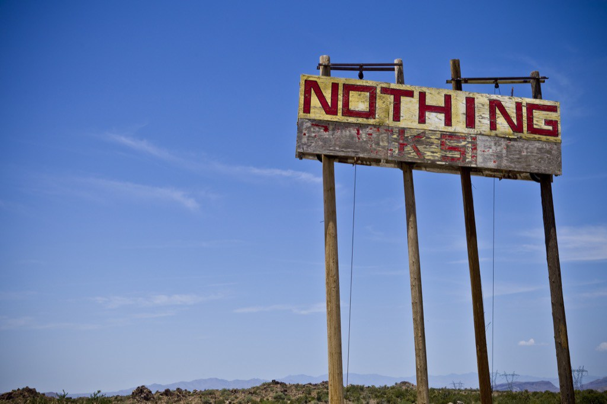
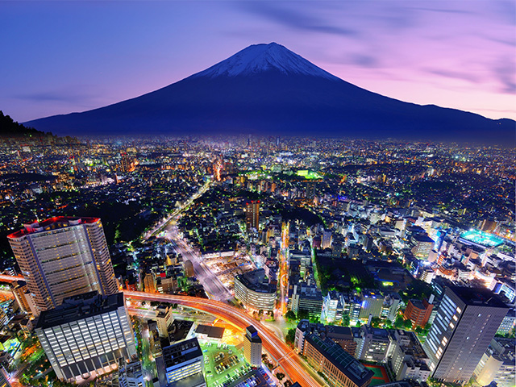
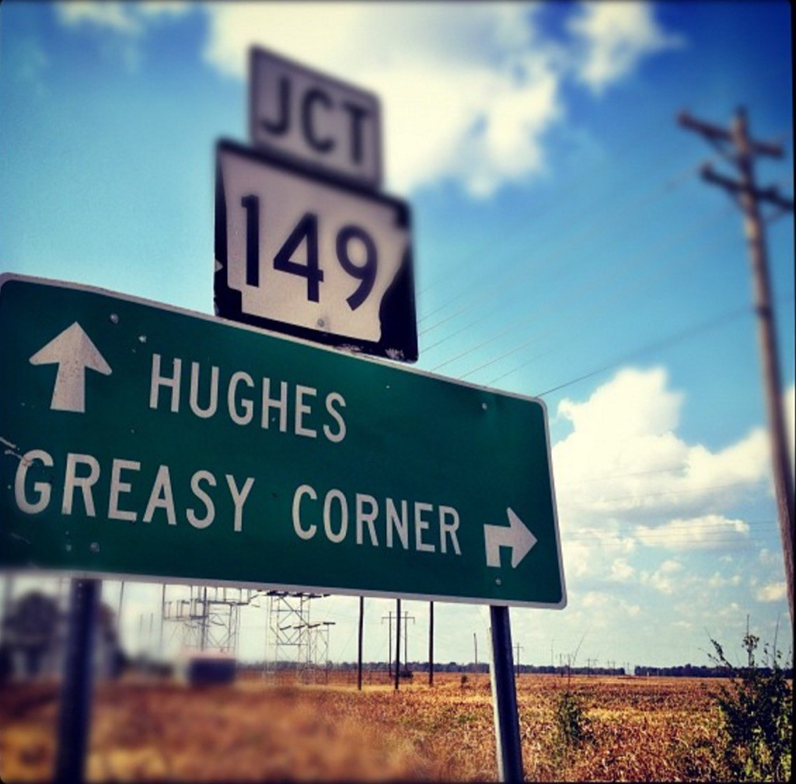
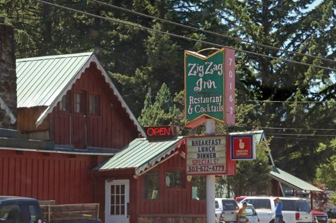

Nothing, AZ
Nothing, Arizona is an uninhabited ghost town located in the eastern part of the Mohave Desert in Mohave County. It was established in 1977 and named by committee by a group of local drunks. At its peak of prosperity, Nothing boasted a population of 4, a gas station, and a state-of-the-art convenience store. The town was officially abandoned in 2005 and was bought by Mike Jensen in 2008 with the hopes of establishing a globally recognized Pizzeria empire, but, alas, his plans failed, and since 2011 the town has lain dormant once again. It has been speculated that since its abandonment the town has played host to various ghost orchestras, ufos on vacation in search of local yokels to abduct, poltergeist activity, hippies in search of themselves, assorted serial killers, time traveling cowboy junkies, and the creatures from Tremors (possibly with Kevin Bacon in tow). Like many people, I have never lived in Nothing, Arizona.
Interested in Moving?Christ Church, Barbados

Christ Church is a parish on the island of Barbados and is one of the original six colonies established by Sir William Tufton in 1629. It is perhaps best known as being the birthplace of famous beatboxer and rapper Doug E. Fresh, and several famous Cricket players. It seems to be a popular tourist destination and sports many beautiful beaches, if you’re into that kind of thing. If you’re interested in visiting the Island, I would suggest staying away between the months of May through August when the island is most likely to be overrun by sunburnt baby boomers and Jimmy Buffet fans in search of their own personal Margaritaville and that ever elusive Cheeseburger in Paradise. By all accounts it seems to be a pretty nice place to call home, but I wouldn’t know for sure, because, as of yet, I never have.
Interested in Moving?Tokyo, Japan
Tokyo is the largest city in Japan and has served as the country’s capital since 1869, but it got its start as a humble fishing village called Edo which was established in the 14th century. It’s population probably hovers somewhere between 5 and 50 million, but I don’t really know for sure. The city also has the distinction of usually being portrayed as the capital (or at the very least, one of the few surviving metropolises) of a post-apocalyptic world in most cyber-punk fiction (The Neuromancer, Akira, etc. etc. etc.). It is speculated by most experts that by 2030 nearly half of the population will be replaced by robots and self-driving cars giving rides to robots who work at various robot factories in order to provide for their mostly robot families, but I digress… As alluring as the opportunity for contemplation, self-actualization, and soul crushing silence, offered by Nothing, Arizona is; of all the places on this list, this would most likely be my first choice as my next place to call home.
Interested in Moving?Greasy Corner, AK
Greasy Corner is an unincorporated community located in St. Francis county Arkansas. It was previously named Mack’s Corner, after Mack McCollum who ran a local store, restaurant, and automobile repair shop all out of the same building. One day, a local farmer, dinning at the dinner was given a plate with a grease stain on it by a mechanic with grease stained coveralls and remarked that the town ought to be called Greasy Corner instead of Mack’s Corner. The name stuck, the name was changed, and history was made. Since then the businesses have all been shuttered, and Greasy spoon is home to only a handful of residents. The town’s claim to fame is being named in multiple lists of towns with funny names, and it is on just such a list that the author discovered Greasy Corner, Arkansas. As for its other claims to fame, I wouldn’t know, because I have never lived there.
Interested in Moving?Zigzag, OR
Zigzag, Oregon is a village located in the Mount Hood corridor between Rhododendron and Welches (a town most likely named for its prodigious consumption of grape juice). The town is named after the nearby Zigzag River, not the other thing you’re most likely thinking of (although I’m sure those receive a fare bit of use in this hazy little Oregon town…). Zigzag is famous for its Inn, post office, and historic church, as well as, it’s number of Grateful dead and Phish cover bands per capita, which is quite alarming. I’ve never had the honor of hearing one of these bands perform live, as I have never lived in Zigzag, Oregon.
Interested in Moving?